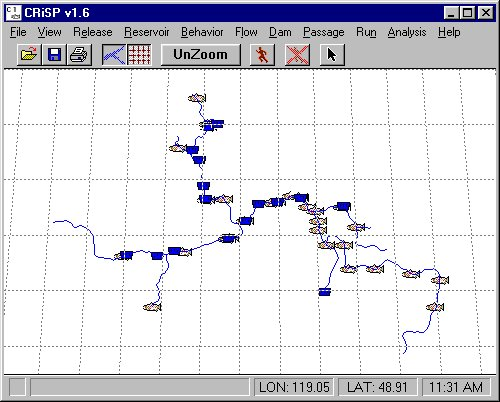

columbia.desc
The River Description File (columbia.desc) contains all the information necessary to define the physical river system from the ocean to the various headwaters. This includes latitudes and longitudes of all possible release sites, dams, and river segments as well as many of the physical parameters of these features. All menus and input and output tools automatically configure from the information in this file. See the Technical Details section on the River Description File Structure for details on file structure, rules of construction, and parameter definitions. The Parameter Glossary contains definitions of the parameters and tokens found in this file.
The columbia.desc file is an ASCII file that you can edit and contains the following information:
The default columbia.desc file contains an abbreviated description of the Columbia Basin river system with about thirty fish release points and major dams. Some rivers in the basin are not represented in this map (for example, Imnaha River or Grande Ronde River).
Additional River Description Files are also available in the COMPASS distribution. They have been modified to reflect changes in the river that could occur under certain proposed management actions. The file columbia_snakedraw.desc does not have any of the Snake River dams in it. This simulates a Snake River drawdown in order to make the Snake River free-flowing. It has four dams removed that are in the default columbia.desc file: Lower Granite, Little Goose, Lower Monumental, and Ice Harbor dams. The file columbia_drawdown.desc is similar to columbia_snakedraw.desc. In addition to the removal of the four Snake River dams, it also has the John Day dam removed. This represents the most drawdown being considered. Five dams are removed that are in the default columbia.desc file. A River Description File can only be read when COMPASS is initially started. In order to use one of the alternative files, you must start COMPASS from a command prompt with the -r flag. See the Starting from the Command Prompt section for more information.

Columbia River map showing potential release sites, dams, and rivers